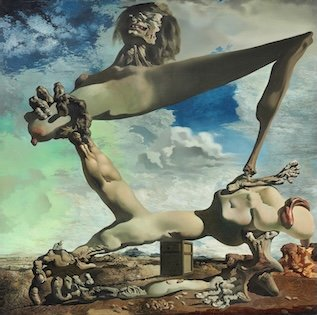

Soft Construction with Boiled Beans (Premonition of Civil War)
Salvador Dalí · 1936 · Oil on canvas · 100 × 99 cm · Philadelphia Museum of Art
In copyright. Look and learn: shown for study, not for download.
Studies for this painting date back to 1934, and Dalí painted it in 1936, only six months before the Spanish Civil War began. He later claimed that he had known the war was coming long before it started. Some have speculated that he changed the painting's name after the war began, although that is not certain.